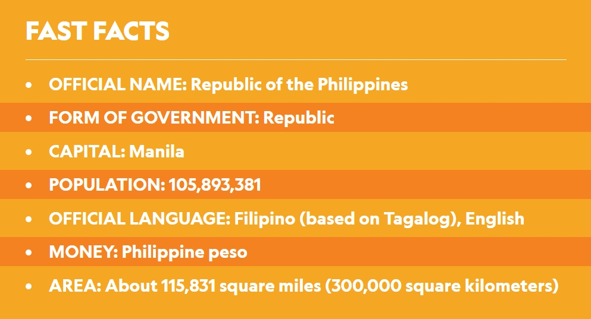
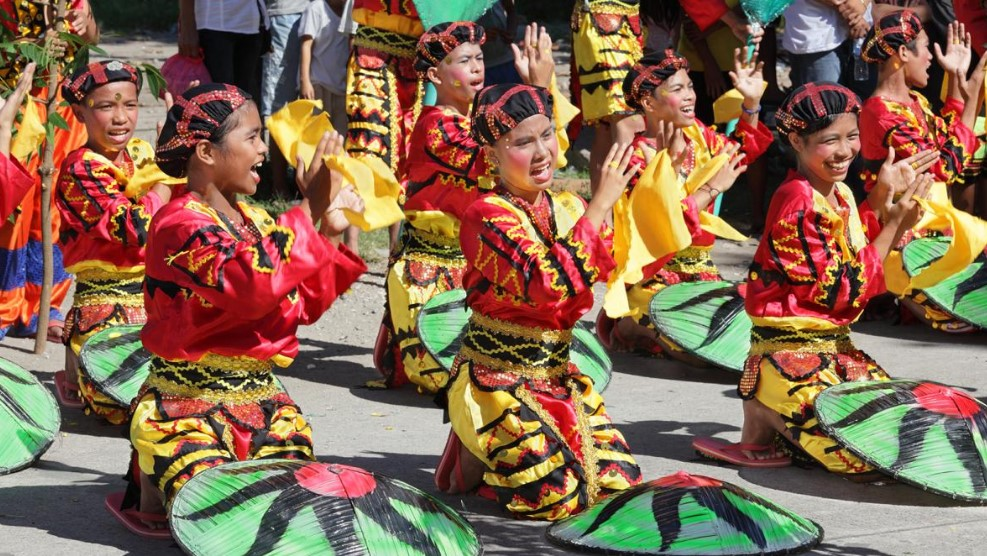
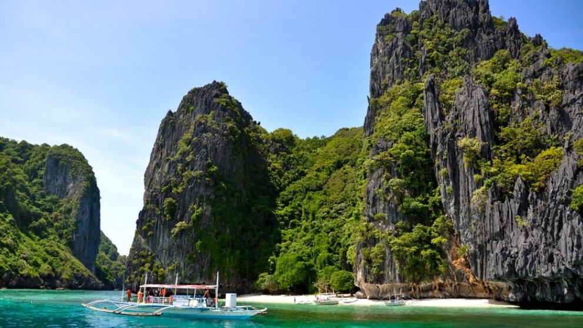
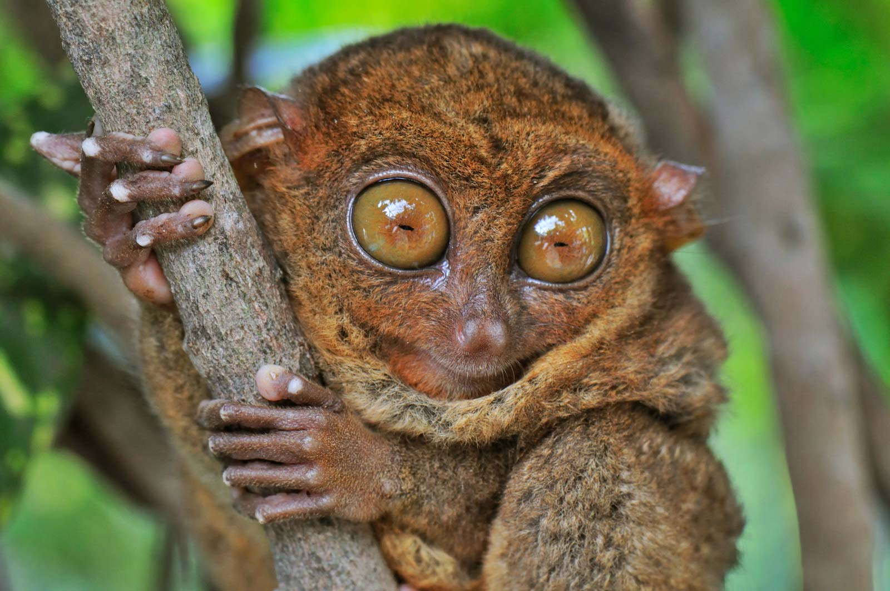
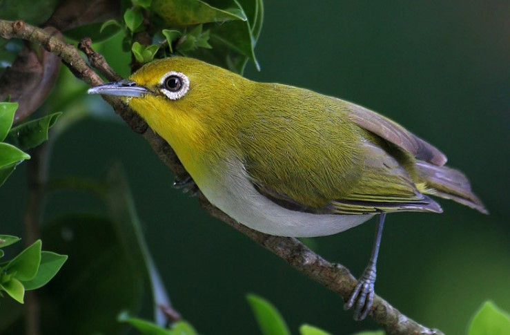
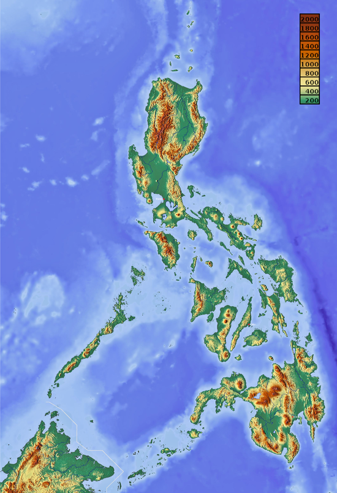
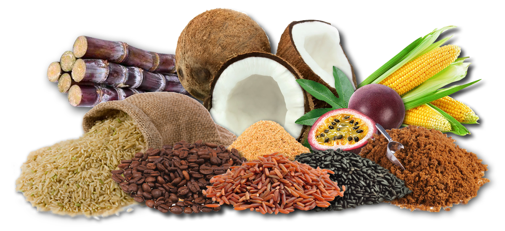

Philippines
The Philippines is an archipelago, or string of over 7,100 islands, in southeastern Asia between the South China Sea and the Pacific Ocean. The two largest islands, Luzon and Mindanao, make up for two-thirds of the total land area. Only about one third of the islands are inhabited.

PEOPLE & CULTURE

Filipinos are predominantly of Malay descent, frequently with Chinese and sometimes American or Spanish ancestry.
Many Filipinos have Spanish names because of a 19th-century Spanish decree that required them to use Spanish surnames, or last names. Parents often name their children after the saint whose feast day was on the day of their birth.
Elementary education in the Philippines starts at age seven, is required by law, and lasts for six years. Secondary education begins at age 13 and lasts for four years; undergraduate college instruction typically is four years.
NATURE

The islands are home to many species of flowering plants and ferns, including hundreds of species of orchids. Tall grasses have replaced the forests, which have disappeared due to logging, mining, and development.

The Philippines are inhabited by more than 200 species of mammals, including monkeys, squirrels, lemurs, mice, pangolins, chevrotains, mongooses, civet cats, and red and brown deer, among others.

The binturong, or Asian bear cat, was once prominent, but now this furry mammal is vulnerable. The tamaraw, a species of small water buffalo found only on Mindoro, is critically endangered.

Hundreds of species of birds live in the Philippines, either for all or part of the year, including peacocks, pheasants, doves, parrots, kingfishers, sunbirds, tailorbirds, weaverbirds, and hornbills. The endangered Philippine eagle, which eats monkeys, is barely surviving deforestation.

GOVERNMENT
Filipinos elect their president. The president is the head of state and the commander-in-chief of the armed forces and serves a six-year term.
The economy is based on agriculture, light industry, and services. The country produces bananas, rice, coconuts, corn, fish, mangos, pineapples, sugarcane, pork, and beef.


.png)
.png)
.png)
.png)
.png)
.png)
.png)
.png)
.png)